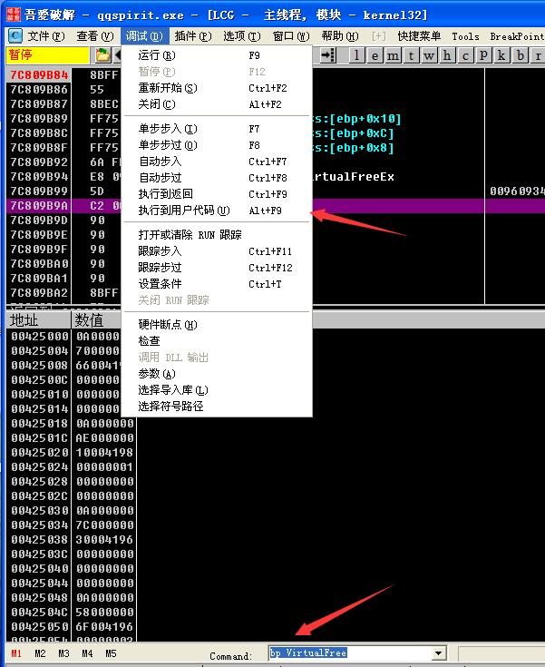
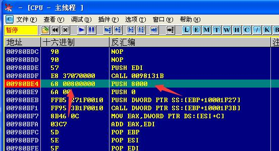
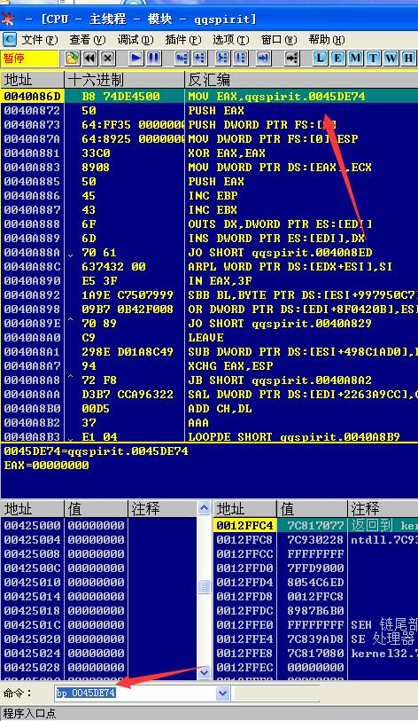
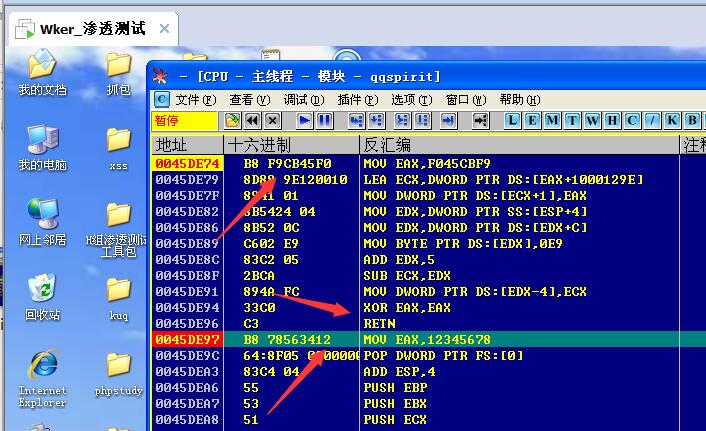
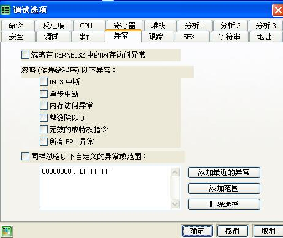
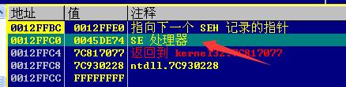
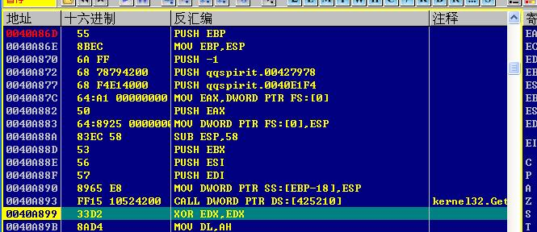

比较常用的脱壳技巧2
之前文章介绍了一些比较常见的，下面再介绍几种
VirtualFree法1
这种方法首先是下VirtualFree的断点，执行到我们的用户组代码，然后搜索push 8000，之后我们就往下跟踪，然后大跳转跟过去，一般就到了我们的OEP，具体操作看截图：
首先下端之后运行，然后回到我们的程序领空。

然后接下来我们搜索push 8000，进行下断。

最后就来到了我们的OEP
VirtualFree法2
这个更加简单，我们下VirtualFree的断点，然后执行两次，意思就是在第二次断在VirtualFree的时候我们返回到程序领空，继续单步就好了。
mov转移法
就是说当我们刚进入程序的时候，如果首句出现mov指令的时候，我们给他后面的地址下断点，例如：

然后运行，跟下去就好了
但在这里我们看到一个函数片段，也就是有一个retn，我们在片段下方进行下断：

然后运行，继续往下跟踪，就到了OEP。
VirtualAlloc法
这个法子和VirtualFree法2基本没差别，一个操作方法，无非下的函数变了，但是后面跟踪的会有点长。
最后一次异常法
首先我们先将OD中的所有异常全取消掉，然后重新载入程序，操作如下：

然后我们运行程序，程序会中断，直到我们运行N次之后，程序顺利跑起来了，那我们再次重新运行，然后运行N-1次，查看SE（异常）处理器在堆栈中记录的地址：

然后转到这个地址，接下来的操作和我们的mov转移法相同了。（不要忘记调节回去哦！）
at GetVersion
程序就会运行到GetVersion，然后我们在段尾下端，然后返回去，发现你发现你现在就在OEP下方，嘻嘻。
